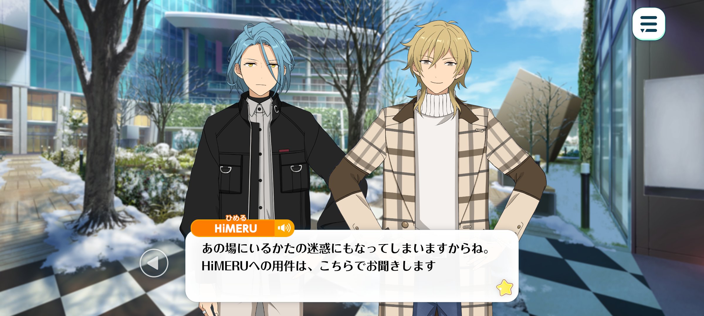

Scout! LUCKY SCRAMBLE
Fortunate Heartthrob – Chapter 4



Kaoru: Yupyu~p! Let's head outside. It might be a little chilly, but we shouldn't make too much noise indoors~.
HiMERU: It would be inconsiderate to disturb everyone else, after all. If you have something to tell HiMERU, now would be the time.
Tomoya: Thank you very muuch!
Aira: Yes! Thank you!
Rei: But whatever brings Kaoru-kun here with HiMERU-kun?
Kaoru: We just happened to run into each other, and he even treated me to some juice~♪
I only followed him here to the Hanging Garden because I was curious about what everyone was up to, Rei-kun included.
HiMERU: Indeed. Even if it was merely a coincidence, HiMERU is glad Hakaze-senpai happened to be there.
That said, HiMERU still has no idea why everyone has gathered here to find him.
Aira: We heard some rumours going around the dorms, so we came looking for you!
Tomoya: Yeah! We wanna borrow some of HiMERU-senpai's incredible power...!
Rei: Indeed, indeed. I, too, would rather like to have a taste of that power, HiMERU-kun.
HiMERU: There are rumours about HiMERU circulating around the dorms...? Just what on earth is going on?
Kaoru: Hmm~. Considering they're calling it a "power", I imagine it has something to do with your good luck?
Well, let's hear them out one at a time. Aira-kun, why don't you go first?
Aira: Okay!
I'm waiting for the announcement of the lottery results for tickets to a live performance I absolutely have to attend! I've been losing sleep every night worrying about whether I'll manage to get tickets!
I was having trouble falling asleep last night, so Sakuma-senpai told me about the recording he'd done with HiMERU-senpai!
And the moment I heard about it, I knew I just HAD to come find you...!
So, please! I want you to pray for me! Please let me be one of the lucky winners of those live tickets!
HiMERU: ...Prayer, hm? Has HiMERU become some sort of temple or shrine now?
Kaoru: Ahaha. So Aira-kun's here to pray to HiMERU-kun, is he~? Alright, Tomoya-kun, you're up next!
Tomoya: Okay!
This morning, I ran into Tetora in the kitchen. He seemed to be in a pretty strange mood.
So I asked him what was wrong, and he told me that HiMERU-senpai had become a "God Gamer" last night, and that his senpai had some seriously incredible luck!
And today, I've got an audition that I absolutely have to pass!
I've practised and prepared as much as I possibly can. So... could I at least hold your hand or something?!
HiMERU: HiMERU doesn't think holding his hand will make much of a difference, but... If all you want is a handshake, then by all means.
Tomoya: Thank you so much! Somehow, I feel a little more confident now! I'll give that audition everything I've got!
Aira: Me too! After praying to HiMERU-senpai, I feel like I'm practically guaranteed to win! I hope I get a really good seat, too~♪
HiMERU: ...I see.
Tomoya Thank you so much!
Aira: Thank you!
Rei: Those two prayed to HiMERU-kun and then promptly scampered off.
Kaoru: They're still young, y'know? It's nice seeing them so honest about their dreams and the things they love. Makes you feel all warm and fuzzy.
HiMERU: —HiMERU is being treated like some sort of lucky charm. HiMERU isn't quite sure how to feel about that.
Anyway, HiMERU doesn't believe in fortune-telling. Though, isn't the whole point of this supposed to be that HiMERU himself is lucky?
Rei: Umu. And how has it been so far?
HiMERU: Nothing particularly fortunate has happened to HiMERU today.
Last night it was Nagumo, and just now it was Mashiro and Shiratori... If anything, it seems HiMERU is the one handing out good fortune to everyone else.
Kaoru: Could be! Though we don't know yet whether Tomoya-kun and Aira-kun will actually get lucky~.
HiMERU: —Inaba-san never actually said that HiMERU himself would be blessed with good fortune. Perhaps that rabbit's sudden dash towards HiMERU was a sign that HiMERU is the God of Luck?
Rei: The pet's owner was the one who said HiMERU-kun would receive good fortune, was he not? Though, perhaps Inaba-kun is the only one who knows the truth.
Kaoru: But it'd be pretty strange if the rabbit started talking, wouldn't it?
So, Rei-kun, what brings you two together? You mentioned something about borrowing his power?
Rei: Ah, yes, I did. Now, lend me your ears, you two.
...To tell you the truth, I've been plagued by nothing but misfortune since last night~!
HiMERU: Nothing but misfortune, you say...?
Rei: First, the moment I arrived home, I stubbed my little toe against the door...
Kaoru: Uwaa, it's such a simple thing, but it hurts like hell.
Rei: Then, despite noticing immediately, I somehow mistook my toothpaste for facial cleanser and proceeded to wash my face with it...
HiMERU: That sounds like simple carelessness. HiMERU recommends keeping the two products separate.
Rei: And to make matters worse, the partition between Tenshouin-kun's bed and mine suddenly came crashing down...!
When one misfortune follows another like that, it's enough to put anyone on edge.
Perhaps it's because Inaba-kun took a dislike to me... That was what prompted me to come and see how HiMERU-kun was faring.
HiMERU: —HiMERU understands Sakuma-senpai's predicament, but doesn't believe there's anything he can do about it.
Kaoru: That's crazy~. Though, aside from the partition, I'd say the other two incidents were just Rei-kun being careless.
Rei: There's more! Ritsu has been ignoring every single one of my calls!?
Kaoru: Eh? But that's pretty normal for you two. I don't think Inaba-kun has anything to do with it.
HiMERU: Yes. HiMERU agrees that this is unrelated to Inaba-san.
Rei: Hmph. I suppose I knew that already...
Even so, fortune or misfortune, anyone would be a little shaken after experiencing so many coincidences in succession.
It's left me feeling rather down in the dumps... One cannot remain entirely unmoved by such events forever, hm...?
HiMERU: …